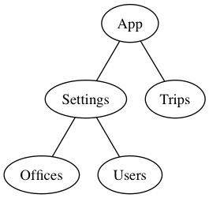

The TravelPerk Front End Style Guide
Introduction
This guide is a living document on how to write React applications at TravelPerk, expect it to change over time. Keep an eye on it to be up-to-date with our latest development practices.
Feel free to link or quote sections of this guide in your pull request reviews.
If you think parts of the guide are no longer valid or can be improved open a pull request and ask the rest of the team to review it.
The chapters should be read in order. They start with the basic notions to setup a project and go to more advanced concepts. The idea is that if you just joined TravelPerk, after reading this document, you'll be able to work on our front end code. If that's not the case please raise your concerns with the members of your team.
You will find the following boxes, here's what they mean:
How to Setup a Project
Create you React projects using Create React App this will give you a solid starting point and free upgrades. Don't eject unless you have a very good reason for doing so. If you want to eject check with the rest of the team first.
Additional Tools
Once you have your project setup with Create React App, you will still need some extra configuration.
Node.js and npm
Make sure you specify your Node.js version in an .nvmrc file for nvm users.
Try to use npm over yarn. They are both great package managers but
keeping the same version of npm among the whole team is easier since it's bound to Node.js's version.
Flow
We try to type-check all our JavaScript files using Flow. To install Flow, you can simply follow the installation guide.
It's important that you execute flow-typed after you setup Flow and every time you install, remove or update a node module.
flow-typed automatically every time our modules list gets updated.
Prettier
Instead of having an extensive style guide dissecting where to put every white space we prefer to use Prettier for automatic code formatting.
We set the following flags for prettier: --no-semi --single-quote --jsx-bracket-same-line=false --trailing-comma=es5 --parser=flow.
Make sure you follow the official documentation so that Prettier runs automatically for every new commit.
Codeship
TBD
Others
If you are on a Mac, Jest watch mode might not be working for you. You can fix it by installing or upgrading watchman.
Folder Structure
Follow the folder structure made by Create React App as much as possible. That means keeping all your configuration files in the root folder and all the code in src.
Inside src/ you're going to have a structure similar to the following:
api/- Contains all the modules that make API requests
app/- Contains the whole app
styles/- Contains JavaScript modules with styling information. This folder may not be needed for some projects.
types/-
Contains the Flow definitions for types that are not specified by
flow-typed. utils/- Any utility module goes here.
index.js- The main JavaScript files that bootstraps the whole application
setupTests.js- A file that gets executed before the tests are launched.
All the static files that are not imported via JavaScript—e.g. index.html, favicons—are placed in the public/ folder.
Code Style
As said we leave code formatting to Prettier, there are also some ESLint rules that are automatically set by Create React App.
Here are some advices on how to write JavaScript code so that is more readable.
- Prefer
constoverlet. Code written with constants is often more readable - Never use comments to describe what your program is doing. The code should be easy to read and understand. Comments are a useful tool to explain why you wrote a portion of your program in a certain way but not to clarify what's going on in the program. Even worse, if you update your code the comments no longer describe your logic. Consider the following examples.
-
Learn
Arraymethods, in particularfilter,find,includes,map,forEach,reduceand,some. With these methods you'll be able to get rid of loop statements 90% of the time.
How to Write a Component
There are two different kinds of components: Containers and Presentational—sometimes also called Smart and Dumb. You can read more about them here.
Presentational Components
Presentational Components are the easiest ones. Ideally, all they do is to take some data in—viaprops—and render it on the screen.
A Presentational Component might have an internal state (e.g. if it handles an input element), but it should never communicate directly with the server.
If possible create your Presentational Components using a functional style:
If you need helper methods, just create them in the same file or import them from a module.
Having several presentational components is OK. In fact, a good React application is made of many small components rather than few huge ones. Small components are easier to write, test and maintain.
Container Components
Containers Components take care of everything that is not strictly visual:
- Fetching data
- Handling the internal state of the application
- Notifying the server about updates
- Routing
Every app has at least one Container called <App>.
A container is defined as a class because it has to hold an internal state.
In the previous example, we created a container called <MyPageContainer> and initialized its state to hold some users.
The container is rendering <MyPage> which is a presentational component.
As you can see users is initially null because we have to fetch the users from the server. Let's do it now.
Here we use componentDidMount to initiate the fetch.
The fetchUser method is pretty straightforward, it loads the users and saves them in the state. The reason why we have a separate method for fetching
is that it will be easer to test.
prototype and can not be mocked during tests. Stick with normal functions and bind them in the constructor like we do
in the examples.
Note that componentDidMount can initiate more than one fetch at the time.
Lastly, we updated the render method so that it returns a <Loading> component while users is null.
Containers Inside Containers
Roughly speaking each container represents one segment in your URL path. For example, if your users visit /settings/users three container components will
be activated: <App>, <SettingsContainer> and <UsersContainer>.
The important thing is that all the containers have separate purposes. In our case, since <App> is loading the logged in user there's no need to fetch it
again in <UsersContainer>.
Make sure your folder structure maps the hierarchy in the containers.
Where to Put the Data
Given that your application is structured like a tree you want to store your data as close as possible to the leafs but at the same time avoid repetition.
Say your app has the following structure:

Here, each node represents a container. The currently logged user will potentially be used by all the components, so we'll store it in <App>'s state.
On the other hand, the list of offices will only be used by <Offices>, so we'll keep it there.
With time data might need to be moved, usually from the leafs up to the root. That's normal, if you keep your Flow definitions up-to-date it will be fairly easy to migrate.
Communicate Between Components
Communication between components is unidirectional. A parent will pass data down to its children via props. If a child needs to notify one of its ancestors, it'll have to do that using a function passed as a prop.
In the previous example you can see how <Child> receives flag from its parent and can also notify <Parent> that
a click happened using the onFlagChange function.
How to Style
You should avoid styling your components as much as possible. We have various components that provide basic styling such as <Layout>, <Spacer> and <Text>.
Before styling a component ask yourself three questions:
- Can I use one of the existing components?
- Seriously though, can I use one of the existing components?
- Can I extend one of the existing components without breaking the single responsibility principle?
If you answered no to all the previous questions, talk with your designer to see if it's possible to modify the design to use existing components. If that's not an option, define with the designer what's the best approach: creating a new general component or only one that will be used in your feature.
If you can't avoid styling use styled-components.
Try not to hard code values directly, instead create a variables.js file within src/styles.
tk-components already has a module with our variables defined. Try to use it instead of defining your own values.
How to Test
We implement two different kind of tests: unit tests and functional tests.Unit Tests
Use Jest to write unit tests and keep the test file in the same folder as the code that is being tested.
Name the test file the same as the original file but add the .test suffix. So, if you're testing Component.js you will have
Component.test.js.
Although unit tests differ depending on what you're testing—a Presentational component or a Container—they all share a similar skeleton.
The previous example tests a generic <Component>. The describe method is useful for grouping related tests.
Remember to add < and > around the component name to signify that it's a React component and not a generic class or function.
We're running only one snapshot test that checks that the component gets rendered.
What's interesting here is the setupComponent method which has three advantages:
- Defines default props
- Can find child elements
- Only method that needs to be updated
For the first one, if our component has some props that must be set setupComponent can do that for us:
setupComponent is also useful to find child components without having the logic in your tests.
Last, if your component updates and breaks the logic inside setupComponent you only have to fix it there. Compare this to updating all your test cases.
With the basic structure out of the way let's see what should be tested in a component.
setupComponent and a lot of the patterns you'll see here are used over and over throughout the codebase.
It would be useful to extract some of the logic to a helper library.
Render
All React components must have a render method. It's important to test that this method returns what we expect.
In addition to snapshots we can test that what gets rendered is what we expect.
Make sure you test all possible outputs for different props configurations. Code coverage can help you figure out if some cases are not tested.
Events
If a component exposes some props for event handling you need to test that they fire sending the correct data.
Imagine you're implementing an <Input> component, you want at least to have a onChange to notify about changes.
This is how you would test it.
Of course, you need a test for each event prop you have. In our <Input> example we might have to cover onFocus, onBlur etc...
If the way we call simulate confuses you check out this discussion and in particular this comment.
In a nutshell, we pass a mocked event simulating the event triggered by the HTML <input> element.
simulate you can pass other properties too. One that is often useful is preventDefault.
State and State Mutations
If your store holds some state you need to test it. First you need to check that your state is correctly initialized.
Your state will be updated at some point. If it doesn't it can simply be converted as a constant.
Usually state mutations happen as a result of some other event—user interaction, server response—therefore defer to the other sections of this guide to see how to test these situations.
In general though, you want to check that component.state() contains the properties that you expect at any given time.
setState.
This is very useful when you want to set an initial state for your component before testing it.
Fetch Calls
Each interaction with the server has to be tested.
Let's say you have a component that renders a button. When the button gets clicked a fetch has to happen. When the fetch is done the state updates. This is how the code for this component might look like.
We can now write a test for this feature.
As you can see, the test is divided in two. We first test that once the button is clicked the fetch is performed. Then, we check that when the fetch is called the status is updated accordingly.
The reason for this is simple, our test need to know when the promise resolve, to do this we need to have the promise. In order for that to happen we need to call the event handler directly.
There are two new things in the test example above. The first one is jest.spyOn
that takes one method from an object and converts it into a spy. Notice how at the end of the test mockRestore
is called to restore the method at its original state. If you fail to do that some of your other tests might fail.
The second new item is at the very top of the file and is jest.mock.
What it does, is taking a module and replacing it with a mocked version of it. In this way we know when the API function would have been called. Also, we avoid real calls to the server.
There's another frequent use case when a container might want to contact the server, at loading time. This is done inside the componentDidMount life cycle method.
The pattern is very similar, what changes is the way you trigger the call. You can't use simulate for lifecycle events.
Enzyme does not fire life cycle methods when you use shallow (although it might in the near future #789)
therefore you have to use mount.
The only difference here is in setupComponent which accepts a second optional parameter mounter. If you want life cycle events methods to be called
you can simply pass mount instead of the default shallow.
mount performs a full DOM rendering which is slower and more error prone. It would be useful to have a way to get life cycle events while using shallow.
Functional Tests
TBDFlow and Data Types
Flow is an amazing piece of software that can make your life so much easier... when it works. Luckily it's getting better and better and if you follow these rules you should not have big issues.
Check all your JavaScript files with flow not only React components. To check a file simply add // @flow as the first line.
Type Check React Components
Refer to the official docs on how to test a React component. One thing to notice is that
we use exact types to define props and state. So instead of { user: User } we write {| user: User |}.
Define Types
We define all our types is src/types/global.js, although in the future we might decide to split this file in sub-modules.
These are the convections that we apply.
-
We never export
Idsince is a very generic type, we prefer to use$PropertyType<T, x>. It doesn't change much from Flow's point of view but makes the code more expressive: